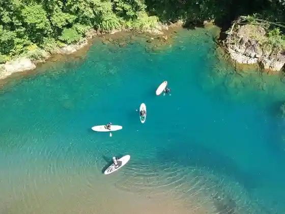
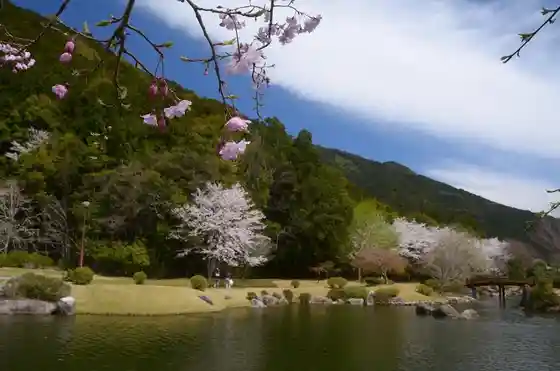
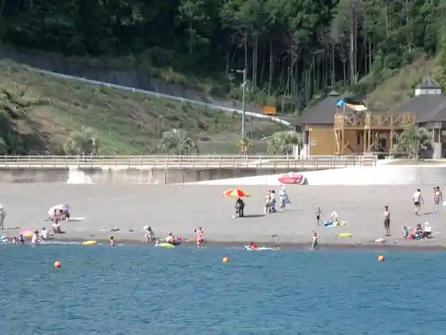
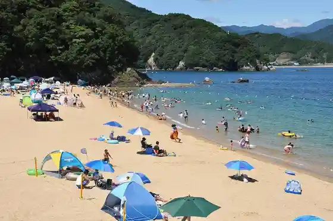

Shirubauiiku Jakkan Aki Ari ! Shoshinsha Demo Anshin no Gaido Tsuki SUP Tour ! Nippon Dekokodake !? Kawa Kara Umi Made Tabi Suru SUP SUP to Tentosauna De Tsuitachi Mankitsu ♪
Kihokucho, Mie · Official / source link

Tanemaki Gombe Village
Kihokucho, Mie · 0597-32-3288 · Official / source link

Shiro no Hama Beach
Kihokucho, Mie · 0597-31-0433 · Official / source link
Kuro Hama Beach
Kihokucho, Mie · 0597-46-3116 · Official / source link

Wa Gu no Hama Beach
Kihokucho, Mie · 0597-39-1212 · Official / source link

Furusato Beach
Kihokucho, Mie · 080-1555-1889 · Official / source link
Shiro no Hama Puru & Beach
Kihokucho, Mie · Official / source link
Kakiuchi Engei (Mikan Kari)
Kihokucho, Mie · 0597-49-3880 · Official / source link
Shi Kami Terasu
Kihokucho, Mie · 0597-46-1011 · Official / source link
Umakoshi Toge (Kumano Kodo Ise Michi)
Kihokucho, Mie · 0597-89-6172 · Official / source link
Kiaora Paddle
Kihokucho, Mie · 080-1605-1036 · Official / source link
Tsuri Hori Masanori Maru
Kihokucho, Mie · 0597-47-5820 · Official / source link
Tanemaki Gombe Yuki Hi Oyobi Zumbera Ishi
Kihokucho, Mie · 0597-32-3915 · Official / source link
Bin Ishiyama
Kihokucho, Mie · 0597-46-3555 · Official / source link
Furusato Kaigan Campground
Kihokucho, Mie · 080-1555-1889 · Official / source link
Roadside Station (Umiyama)
Kihokucho, Mie · 0597-32-3553 · Official / source link
Isseki Toge Heiho Toge Kumagatanimichi (Kumano Kodo Ise Michi)
Kihokucho, Mie · 0597-89-6172 · Official / source link
Shi Kami Toge (Kumano Kodo Ise Michi)
Kihokucho, Mie · 0597-89-6172 · Official / source link
Takatsuka Yama Lookout
Kihokucho, Mie · Official / source link
Furusato Hodo Tonneru (Kyu Umino Suido)
Kihokucho, Mie · 0597-32-0234 · Official / source link
Doze Hodo Tonneru (Kyudo Se Suido)
Kihokucho, Mie · 0597-32-0234 · Official / source link
Umiyama Local History Museum
Kihokucho, Mie · 0597-36-1948 · Official / source link
Oshiro Park
Kihokucho, Mie · 0597-39-0800 · Official / source link
Kubo Farm Ichigo Kari
Kihokucho, Mie · 0597-47-2768 · Official / source link
Nagashima Shrine
Kihokucho, Mie · 0597-46-3115 · Official / source link
Shima Kachi Shrine
Kihokucho, Mie · 0597-46-3115 · Official / source link
Toyora Shrine
Kihokucho, Mie · 0597-32-3903 · Official / source link
Dai Masa Tera Koshi E Tenjo
Kihokucho, Mie · 0597-32-0234 · Official / source link
Roadside Station (Kii Nagashima Mambo)
Kihokucho, Mie · 0597-47-5444 · Official / source link
Shima Kachi no Kaishoku Domon (Tenma Hora)
Kihokucho, Mie · 0597-32-3903 · Official / source link
Yonaki Jizo
Kihokucho, Mie · 0597-32-3905 · Official / source link
Umakoshi Ichiri Tsuka (Kumano Kodo Umakoshi Toge)
Kihokucho, Mie · 0597-32-3905 · Official / source link
Anraku Tera
Kihokucho, Mie · 0597-32-0234 · Official / source link
Ko no Ura Tonneru (Kyu Nagashima Suido)
Kihokucho, Mie · 0597-32-0234 · Official / source link
Sennen Village kodo Tenisukoto
Kihokucho, Mie · 0597-46-2111 · Official / source link